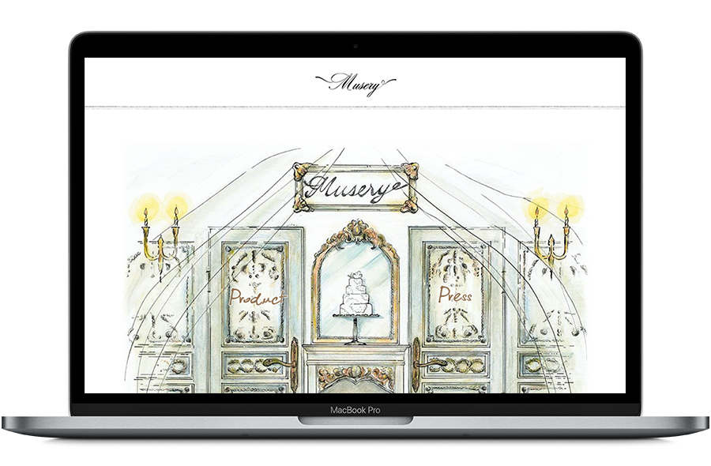

クレイケーキの個人作品＆販売と協会のサイトを兼ねたブランドサイト。
サイト全体をWordpressにて作成。
クライアントよりある程度のデザイン指定があったためコーディングが主。サイトと共に印刷物（名刺・封筒・リーフ類・ボックスケースなど）も制作。
サイト全体をWordpressにて作成。
クライアントよりある程度のデザイン指定があったためコーディングが主。サイトと共に印刷物（名刺・封筒・リーフ類・ボックスケースなど）も制作。
WEB/PRINTING2015年12月〜2018年1月